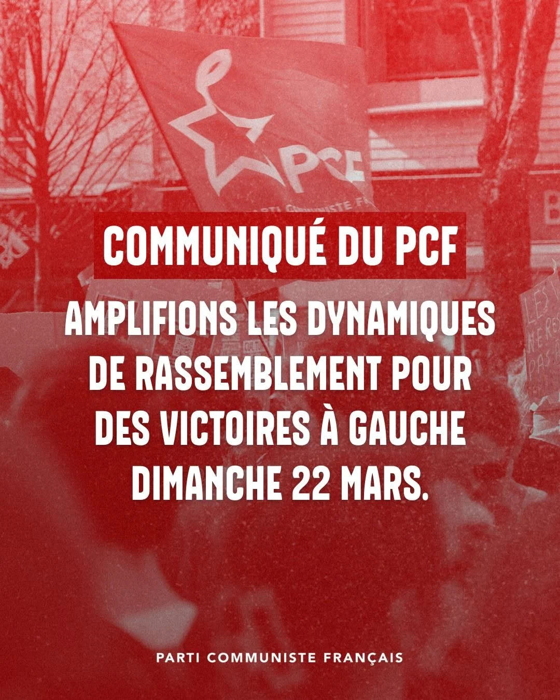

Publication relayée par le PCF 79
Municipales. Le PCF réagit au premier tour
Date de mise à jour indiquée par Facebook · 16 mars 2026
Texte de la publication · PCF national
🔴 Avec plus de 40 % d’abstention, le premier tour des élections municipales confirme une crise démocratique préoccupante. Le PCF appelle à une forte mobilisation des abstentionnistes dans l’entre-deux tours.
Dans de nombreuses villes, des maires communistes sont élus dès le premier tour et des centaines de candidates et candidats communistes sont qualifiés pour le second.
Face à une droite offensive et à une extrême droite en progression, le PCF appelle à agir en faveur des rassemblements gagnants au service de l’intérêt général et sur la base des projets portés dans chaque ville.
Retrouvez le communiqué complet en commentaire.

Sources
PCF national · publication relayée par le PCF 79 · bibliothèque Facebook · AR-0002-FB-00839
À lire aussi · Second tour des municipales, le PCF appelle à la mobilisation